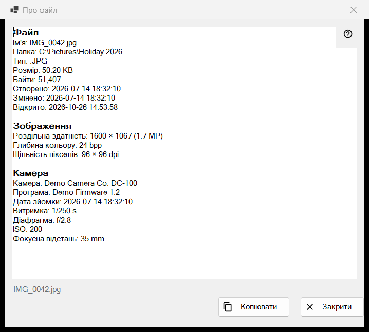
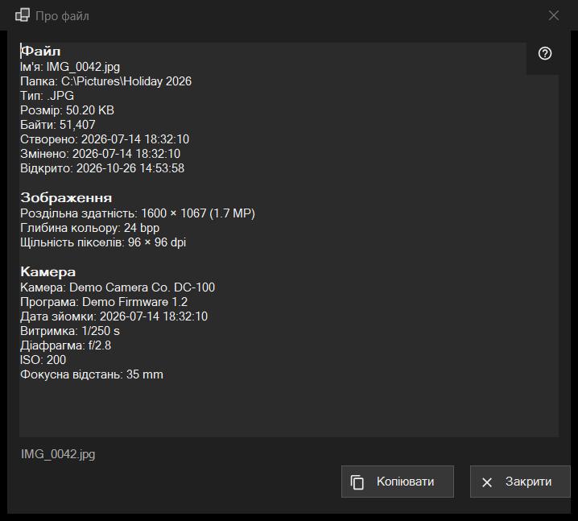

Про файл
Призначення
Знімок лише для читання: усе, що програма знає про файл на екрані - сам файл, зображення з даними камери, документ, звукові та відеодоріжки. Вікно відкривається пунктом «i» першої панелі або пунктом «Про файл» у блоці «Файл» меню переглядача й описує файл таким, яким він був у момент клацання.


Порядок дій
- Покажіть файл у переглядачі.
- Натисніть «i» на першій панелі або виберіть «Про файл» у меню.
- Зачекайте: у рядку стану написано «Читання метаданих файлу..», рядки заповнюються.
- Прочитайте блоки, виділіть потрібне й натисніть «Копіювати», щоб покласти весь текст у буфер обміну.
- Натисніть «Закрити» або Esc.
Елементи вікна
Файл
Цей блок є в будь-якого файлу: «Ім'я», «Папка», «Тип», «Розмір», «Байти», «Створено», «Змінено», «Відкрито» та «Атрибути». Рядок, якому нічого показати, пропускається. Якщо файл не відкрито, рядок стану повідомляє «Файл не обрано»; тимчасова копія з архіву, мережева адреса або зниклий файл дають «Файл недоступний», і вікно не відкривається.
Зображення
Для картинки: «Роздільна здатність» у тому вигляді, як її видно на екрані (знімок із телефона, записаний боком, показано в прямому розмірі), «Глибина кольору» та «Щільність пікселів», якщо файл їх зберігає.
Камера
Читається з даних EXIF знімка: «Камера», «Програма», «Дата зйомки», «Витримка», «Діафрагма», ISO, «Фокусна відстань» і «Автор». «Координати» є лише тоді, коли у знімку записано GPS, і «Копіювати» бере їх також, тож перевірте текст, перш ніж ним ділитися.
Документ
Для текстового файлу: «Рядків», «Слів», «Символів» і «Кодування», а для завеликого файлу ще «Файл прочитано не повністю». Для електронної книги: «Назва» й «Автор». Для PDF: «Сторінок».
Медіа, Відео та Аудіо
Для звуку та відео теги («Назва», «Виконавець», «Альбом», «Рік», «Трек», «Жанр», «Режисер», «Серіал», «Сезон», «Серія», «Тривалість») і перша доріжка кожного виду («Відео»: «Роздільна здатність», «Кадрів на секунду», «Кодек», «Бітрейт»; «Аудіо»: «Кодек», «Канали», «Частота дискретизації», «Бітрейт») з’являються трохи згодом за решту, коли медіарушій дочитає файл. Вікно на нього не чекає. Для мережевих потоків рядків доріжок немає.
«Копіювати» і «Закрити»
«Копіювати» кладе весь текст у буфер обміну, рядок стану відповідає «Скопійовано в буфер обміну»; якщо буфер зайнятий іншою програмою, про це сказано, і кнопку можна натиснути ще раз. Виділений фрагмент копіюється й за Ctrl+C. Якщо прочитати нічого не вдалося, у полі написано «Не вдалося прочитати відомості про файл.» Поруч із кнопками рядок стану показує ім’я файлу. Перехід до іншого файлу це вікно не змінює: натисніть «i» ще раз для нового файлу.